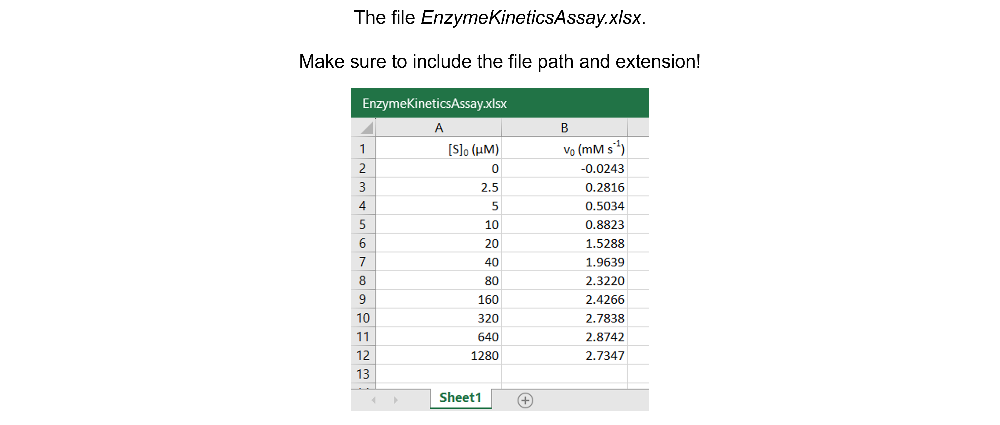
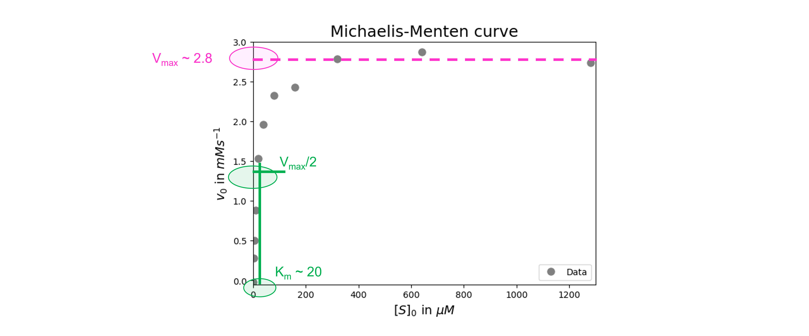

Michaelis-Menten curve#
Introduction#
In the following, simple, mechanism, \(E\) is the enzyme, \(S\) is the substrate, \(ES\) is the enzyme-substrate complex, and \(P\) is the product:
Where \(k_{+1}\) (in \(\mu\)\(M^{-1}\) \(s^{-1}\)) and \(k_{−1}\) (in \(s^{-1}\)) are rate constants for the forward and reverse reactions between \(E\) and \(S\), respectively, and \(k_2\) (in \(s^{-1}\)), the rate constant for the \(ES \rightarrow E + P\) reaction.
We will determine the Michaelis-Menten constant \(K_m\) (in \(\mu\)\(M\)), the maximum velocity \(V_{max}\) (in \(\mu\)\(M\) \(s^{-1}\)), and the catalytic constant \(k_{cat}\) (in \(s^{-1}\)) for this mechanism.
For this, the initial velocity \(v_0\) (in \(\mu\)\(M\) \(s^{-1}\)) of the enzymatic reaction has to be measured at different initial substrate concentrations \([S]_0\). The enzyme concentration, pH, and temperature are kept constant.
\(V_{max}\), the maximum rate achieved by the system at maximum (saturating) substrate concentration, and \(K_m\), the substrate concentration at which the reaction rate is half of the maximum rate, can be obtained by fitting the data with the Michaelis-Menten equation:
In this simple mechanism, and with the assumption that \(ES\) is in a steady state, we define
and
Of note, in this case, the catalytic rate constant, \(k_{cat}\), is equal to \(k_2\) and can be calculated using \(V_{max}\) and \([E]_0\).
In this notebook, we analyze and interpret data from an enzyme kinetics assay in order to calculate \(K_m\), \(V_{max}\), and \(k_{cat}\).
Data#
Get the data needed for this exercise here.
The spreadsheet “EnzymeKineticsAssay.xlsx” contains one sheet (see figure below) with 11 substrate concentrations (\([S]_0\) in \(\mu\)\(M\)) and corresponding initial velocities (\(v_0\) in \(mM s^{-1}\)) measured.
{kind=link}
Data analysis#
Exercise 73
Import the libraries needed. Use convenient naming.
Solution to Exercise 73
#Import the libraries
import numpy as np
import matplotlib.pyplot as plt
import pandas as pd
from scipy.optimize import curve_fit
Exercise 74
Read in the data containing \([S]_0\) and \(v_0\) into a Python pandas DataFrame.
Solution to Exercise 74
Here’s one possible solution.
#Read the Excel file
dfEK = pd.read_excel ('../data/EnzymeKineticsAssay.xlsx', #create a pandas DataFrame from the filename with file path and extension shown
sheet_name=0, #use the first sheet (no need to specifically include this as we use the default setting)
header=0) #our data has column names
print(dfEK) #print the DataFrame created
Exercise 75
Plot the data: \([S]_0\) versus \(v_0\).
Inspect and interpret the data: Inspect and interpret the data:
Do we discern a clear trend in our data? What does it represent?
Do the data show a positive (sloping upward), negative (sloping downward), or no (spread out) correlation?
Do we notice a linear or a non-linear relationship between x- and y-values?
Do we have outliers? See the section “Outliers” in this Jupyter Book for a detailed discussion.
Solution to Exercise 75
Here’s one possible solution.
#Plot the data
plt.figure(figsize=(7,5)) #start a figure object
plt.plot(dfEK.iloc[:,0], dfEK.iloc[:,1], #plot a set of x (= [S]0, i.e. column 1),y (= V0), i.e. column 2) data points
marker='o', color='gray', markersize=8, linestyle='None', #use a round, gray marker with size 8; use no line
label='Data') #add a legend label
plt.title('Michaelis-Menten curve', fontsize=18) #title of graph
plt.xlabel('$[S]_0$ in $\mu$$M$', fontsize=14) #X-axis label
plt.ylabel('$v_0$ in $mM s^{-1}$', fontsize=14) #Y-axis label
plt.axis([-0.1, 1300, -0.05, 3]) #axis boundaries, in this case from -0.1 to 1300 for the X-axis and -0.05 to 3 for the Y-axis
plt.legend(loc='lower right') #show legend in lower right corner
plt.show() #show the figure object
The graph follows a characteristic hyperbolic shape that matches the Michaelis-Menten equation. This experiment has reached the \(V_{max}\) value, which is clear from the Y-asymptote. This experiment has collected enough data around \(K_m\).
No data points are spotted as clear outliers.
Exercise 76
Define the Michaelis-Menten function to fit the data.
Solution to Exercise 76
Here’s one possible solution.
#Define the Michaelis-Menten function
def MichaelisMentenF(x, Km, Vmax) :
return (Vmax * x)/(Km + x)
Exercise 77
Find and test initial guesses for the fitting parameters.
Solution to Exercise 77
We get initial guesses for \(V_{max}\) and \(K_m\) from our graph (see figure below).
{kind=link}
Here’s one possible solution.
#Create a list of substrate concentrations as input for the function
Sin=np.linspace(0, 1500, 1000)
#Test the initial guesses for the fitting parameters
plt.figure(figsize=(7,5)) #start a figure object
plt.plot(dfEK.iloc[:,0], dfEK.iloc[:,1], #plot a set of x (= [S]0, i.e. column 1),y (= V0), i.e. column 2) data points
marker='o', color='gray', markersize=8, linestyle='None', #use a round, gray marker with size 8; use no line
label='Data') #add a legend label
plt.plot(Sin, MichaelisMentenF(Sin, 20, 2.8), #Test my guesses for the initial parameters. Use the generated GdnHCl array between 0 and 10 as x-values.
color="red", linestyle='solid', #use red, solid line
label='Guesses') #add a legend label
plt.title('Michaelis-Menten curve', fontsize=18) #title of graph
plt.xlabel('$[S]_0$ in $\mu$$M$', fontsize=14) #X-axis label
plt.ylabel('$v_0$ in $mM s^{-1}$', fontsize=14) #Y-axis label
plt.axis([-0.1, 1300, -0.05, 3]) #axis boundaries, in this case from -0.1 to 1300 for the X-axis and -0.05 to 3 for the Y-axis
plt.legend(loc='lower right') #show legend in lower right corner
plt.show() #show the figure object
Looks ok!
Exercise 78
Fit the data. Report the fit parameters and standard errors on the fit parameters.
Solution to Exercise 78
Here’s one possible solution.
#Fit the data with the chemical unfolding curve
paramsEK, params_covEK = curve_fit(MichaelisMentenF, #the line function we try to fit to the data
dfEK.iloc[:,0], #the x values
dfEK.iloc[:,1], #the y values
[20, 2.8]) #my guesses for the initial parameters
#Report the fit parameters with standard errors for the line function
print("Km = ", paramsEK[0], "±", np.sqrt(np.diag(params_covEK))[0])
print("Vmax = ", paramsEK[1], "±", np.sqrt(np.diag(params_covEK))[1])
We can see that the \(K_m\)-value is 20.1 \(\pm\) 1.6 \(\mu\)\(M\) and \(V_{max}\) is 2.88 \(\pm\) 0.05 \(mM s^{-1}\).
Exercise 79
Calculate the residuals and produce a combined figure showing the residuals plot underneath the main plot with data and fitted curve. Make sure they are aligned and have the same X-axis so we can see which residual corresponds to which data point.
Inspect the quality of the fit!
Look at the graph of the experimental data and the fitted curve Do the experimental data and model match?
Look at the graph of the residuals. Are they around 0? Are they random or is there a trend? If the residuals display a systematic pattern, the model fits the data poorly.
Look at the fit parameters and the standard errors on the fit parameters. Are the fit parameters within (biological) reason? Are the standard errors on the fit parameters small? If a standard error on a fit parameter is bigger than the fit parameter, it is possible that there are not enough data points or that the model fits the data poorly.
Look at the goodness of fit statistics. For example, the value of R-square ranges from 0 (worst possible fit) to 1 (best possible fit). However, these fit statistics are not readily available as output of the SciPy curve_fit() function…
Solution to Exercise 79
Here’s one possible solution.
#Calculate the residuals
resid = dfEK.iloc[:,1] - MichaelisMentenF(dfEK.iloc[:,0], *paramsEK) #calculate the residuals, the star in _*paramsEK_ unpacks the array so the optimized parameter values become the arguments (after the x-values) to the function
#Produce a combined graph
fig = plt.figure() #to create a figure object
xlimits = [-0.1, 1300] #to make sure we use the same of the X-axis boundaries for both plots
ax1 = fig.add_axes([0.1, 0.53, 1, 0.81]) #to specify the coordinates, width and height of the top plot
ax2 = fig.add_axes([0.1, 0.1, 1, 0.4]) #to specify the coordinates, width and height of the bottom plot
ax1.plot(dfEK.iloc[:,0], dfEK.iloc[:,1], #plot a set of x (= [S]0, i.e. column 1),y (= V0), i.e. column 2) data points
marker='o', color='gray', markersize=8, linestyle='None', #use a round, gray marker with size 8; use no line
label='Data') #add a legend label
ax1.plot(Sin, MichaelisMentenF(Sin, *paramsEK), #Add the fitted line to plot. Use the generated [S]0 array between 0 and 1500 as x-values. Use the fitted parameters to calculate the y-values. The star in _*paramsEK_ unpacks the array so the optimized parameter values become the arguments (after the x-values) to the function.
color="gray", linestyle='-', #use a gray, solid line
label='Fit') #add a legend label
ax1.axis(xlimits + [-0.05, 3]) #sets the X-axis and Y-axis boundaries for the top plot
ax1.tick_params(axis='x', bottom=False, labelbottom=False) #removes the ticks and tick labels on the X-axis for the top plot
ax1.set_ylabel('$v_0$ in $mM s^{-1}$') #adds Y-axis title for the top plot
ax1.legend(loc='lower right') #include legend
ax2.plot(dfEK.iloc[:,0], resid, #plot a set of x (= [S]0),y (= the residuals) data points
marker='o', color='gray', linestyle='None', markersize=8) #use gray datapoints size 8 and no line
ax2.axhline(0, color='gray', linestyle="--") #adds a horizontal line at y=0
ax2.axis(xlimits + [-0.3,0.3]) #sets the X-axis and Y-axis boundaries (needs some trial and error to find the right ones!) for the bottom plot
ax2.set_xlabel('$[S]_0$ in $\mu$$M$') #adds X-axis title for the bottom plot, which is the same for the top plot
ax2.set_ylabel('Residuals') #adds Y-axis title for the bottom plot
plt.show() #show the figure object
All in all the fit looks good. There seems to be no trend in the residuals. The fit paramaters are within (biological) reason. The standard errors are not bigger than the fit parameters.